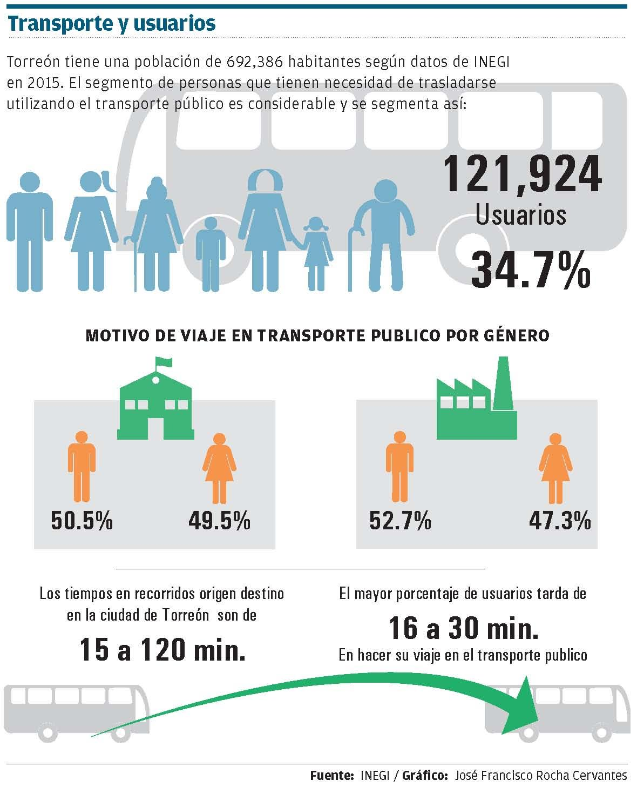

Actualmente el Programa ONU Mujeres elabora en conjunto con el Ayuntamiento de Torreón un diagnóstico para analizar la problemática de la violencia sexual contra las mujeres y las niñas en el trasporte y espacios públicos dentro del municipio.
El diagnóstico es solo uno de los elementos que integrarán el diseño de un programa que permita prevenir el acoso y violencia sexual a corto, mediano y largo plazo. A propósito de este estudio, conviene analizar las características del uso del transporte público por las mujeres en Torreón.
Es bien sabido que las usuarias del transporte público realizan más de un viaje resultado de los roles socialmente atribuidos como son las responsabilidades relacionadas con el hogar y la familia. Varios de los recorridos los realizan antes de llegar a la escuela o centro de trabajo, así como al salir de los mismos.
El municipio de Torreón tiene 692,386 habitantes según datos de INEGI en 2015. El segmento de personas que tienen necesidad de trasladarse por motivo de estudio o trabajo está en el rango de 12-65 años. Son 351,365 personas y representan el 51.72 % de la población total del municipio. Estos pueden elegir dos modos de traslado; por medios motorizados o no motorizados.
De los 351,365 habitantes con necesidad de desplazarse por cualquiera de los dos motivos antes mencionados, INEGI indica que el 34.7 % utiliza el transporte público, lo que corresponde a 121,924 usuarios.
En la ciudad de Torreón actualmente se calcula que 59,661 mujeres utilizan este medio de transporte para llegar a cualquiera de los destinos antes mencionados. 47 % de las usuarias que tiene como destino la escuela y el 38% que tiene como destino su centro de trabajo, pasan entre 16 y 30 minutos en una unidad de transporte.
Esto lleva a las mujeres a enfrentar situaciones que asumen como inherentes al momento de utilizar un autobús y que ponen en riesgo su integridad, como son: asumir cualquier tipo de violencia ligada al género que van desde el piropo, propuestas desagradables, acoso verbal y físico, violencia psicológica, hasta agresiones físicas. La gran cantidad de usuarios en el transporte público facilita estas condiciones de violencia favoreciendo el anonimato del agresor, lo que promueve estas conductas; así como la poca sensibilización de los conductores de las unidades en temas de género.
Una vez terminado el diagnóstico del programa ONU Mujeres entrará en una fase posterior de implementación y seguimiento. Lo que permitirá acceder a un sistema de transporte público que considere aspectos de género como son: regular la capacidad de pasajeros en las unidades, otorgar asientos preferenciales para personas vulnerables, programas de conductores y conductoras profesionalizados, que exista un sistema de transporte regulado, seguro, libre y sin miedo al acoso sexual, con sanciones adecuadas al daño.
Ciudades dispersas
Es importante considerar que las ciudades dispersas y con baja densidad poblacional hacen de la movilidad motorizada una necesidad. La disposición en el territorio de la población, no siempre va acorde con la localización de los centros de trabajo o estudio, dos de las principales motivos por los que se desplazan las personas dentro de la ciudad, sin descartar otros como son la recreación, así como el acceso al suministro de bienes y servicios.
Esta dispersión requiere de una inversión fuerte en infraestructura vial y de servicios, aunado a la operación y mantenimiento necesarios para su óptimo funcionamiento, que impactan fuertemente los presupuestos anuales de los municipios.
En un análisis realizado por el IMPLAN se identifica que los tiempos de traslado en transporte público, pueden oscilar entre los 15 a 120 min. Los segmentos con mayor tiempo en el traslado son los viajes con una duración ente 16 a 60 minutos en ambos destinos: trabajo o escuela.
La implementación del Sistema de Transporte Metrobús en Torreón, significará la disminución de más de 15 minutos en tiempos de recorrido y la reducción considerable de las emisiones de CO2.
Este análisis fue publicado en Milenio Laguna
Problemáticas de las mujeres en el transporte público
Infografía
